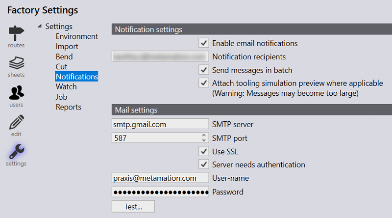
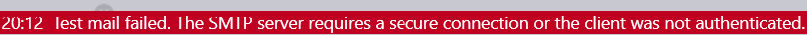
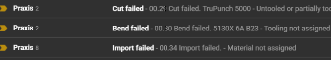
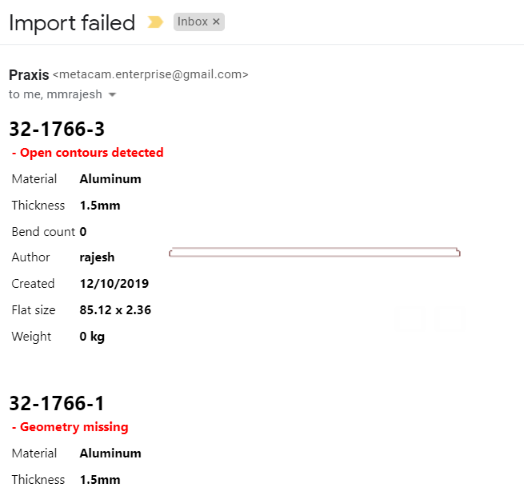
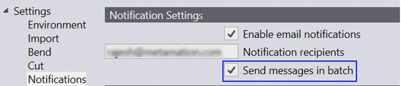
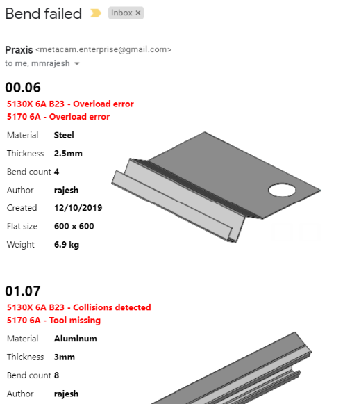
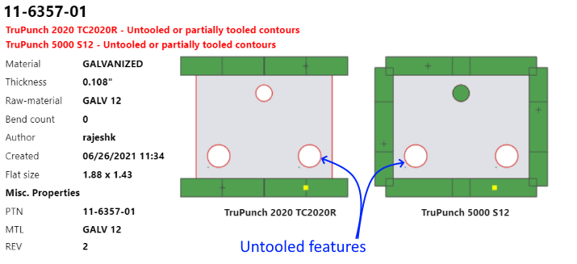
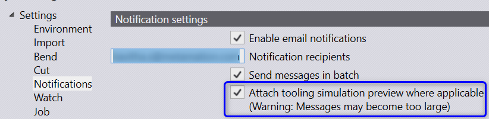
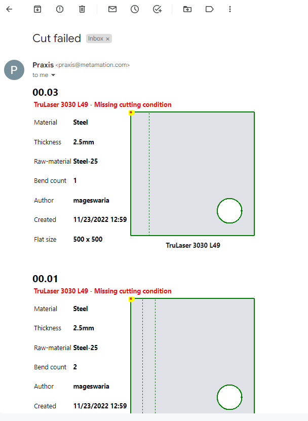

Use Factory • Settings • Notifications to enable and configure the email notification. Praxis needs access to a SMTP service and account to send email. The second section of the settings page provides options to set-it-up.

Enter recipient details and use Test… button to check if email is delivered successfully. It should show an error message like shown in the image below on failure. You can enter more than one recipient by separating them using a comma or space.

Praxis Engine starts sending notification mails once notification setting is enabled successfully and internet connection is up. Emails are sent on import, tooling and nesting errors.


By default, the email is sent immediately. Use Send messages in batch option to combine multiple messages and send them in batch. To avoid large messages, messages sent within a finite duration are combined.


For the tooling errors, now Praxis sends multiple tooling images instead of the single CAD thumbnail (old behavior) in the notification emails. To help visualize the coverage, the tooling items are exploded for the punch tooling. And a yellow/red marker is placed at the last punch hit. Preview of email message sent by Praxis.

Here you can also opt for the tooling simulation preview instead of the static images. Praxis sends a smaller simulation animation of about 10 frames (< 3s) when this option is selected.


Notes: